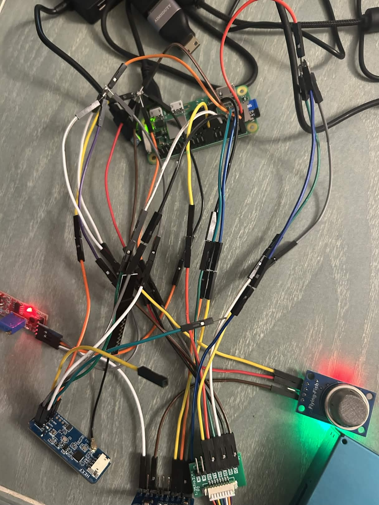
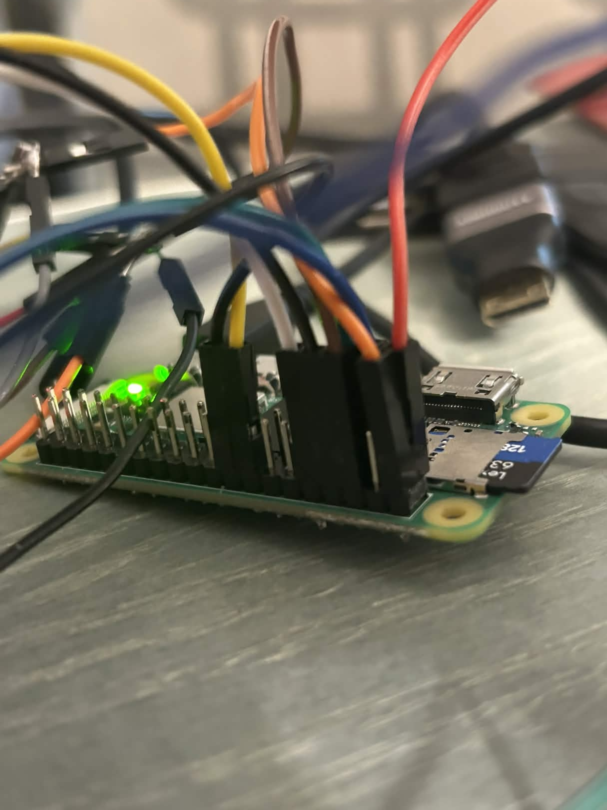
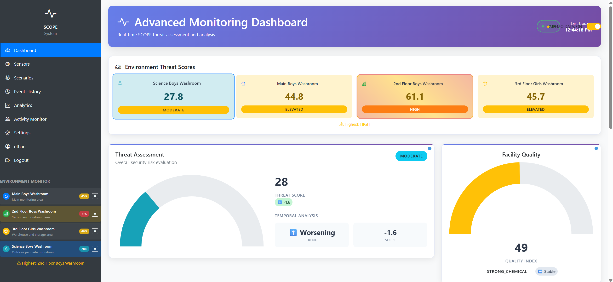
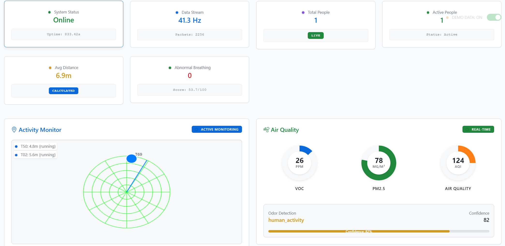
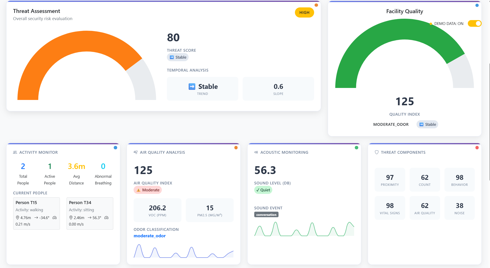
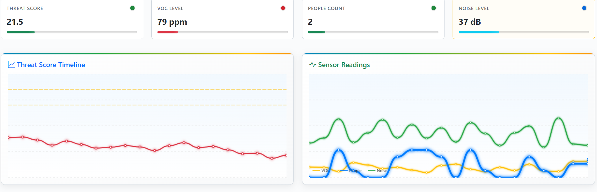
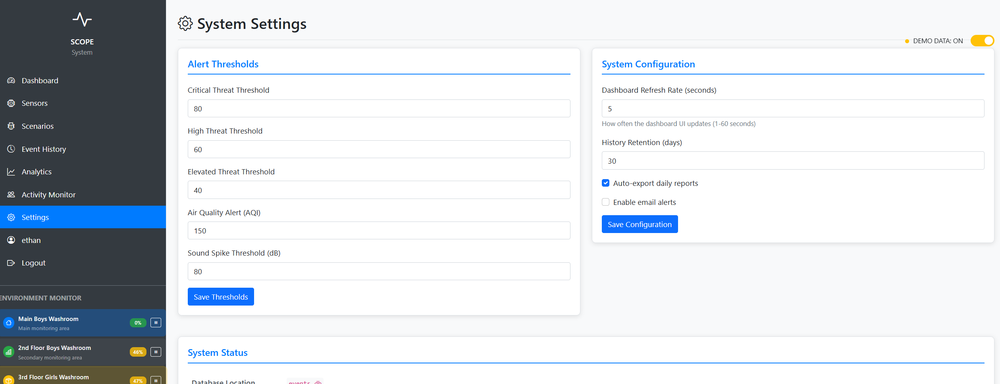

September 2025 - March 2026
Environmental & Security Monitoring System
A Raspberry Pi Zero 2W-based system with a live Flask web dashboard integrating a 24 GHz mmWave radar for presence detection alongside particulate, air quality, and sound level sensors. All are running as a hardened systemd service to protect school washrooms from misconduct.

Full sensor array - HLK-LD2450 radar, PMS5003, MQ135, and ADS1115 wired to the Pi Zero 2W

Raspberry Pi Zero 2W - GPIO headers populated
S1 · Overview
The SCOPE Monitor started off as a problem to tackle improving safety in school washrooms, which are unfortunately common sites for bullying and misconduct. The idea was to create a monitoring system that could detect presence, track movement patterns, and monitor environmental conditions without invading privacy. It uses a Raspberry Pi Zero 2W as the central processing unit, chosen for its compact size, low power consumption, and sufficient processing capabilities to handle multiple sensor inputs and run a web server simultaneously.
The system integrates four sensors: an HLK-LD2450 24 GHz mmWave radar for presence and motion detection, a PMS5003 particulate sensor for air quality (PM1.0/2.5/10), an MQ135 gas sensor for CO₂/VOC levels, and a decibel sensor via an ADS1115 ADC over I²C. All sensor data streams into a Flask web dashboard with live visualization.
The motivation is straightforward: students often avoid school washrooms altogether due to discomfort, and administrators consistently ranked vaping and washroom misconduct among their top safety concerns, which are problems that are hard to catch with traditional cameras. SCOPE was built to close that gap without introducing a new privacy problem of its own.
S2 · Thread-Safe Data Store
Sensor data arrives on independent threads per sensor, while Flask handles HTTP on a separate thread.
A central LiveDataStore hides all changing data into a protective container called a
threading.Lock,
so reads and writes are never fragmented. It also tracks the highest-threat room across four monitored
environments so the dashboard always displays the most urgent location.
class LiveDataStore:
def __init__(self, max_history=100):
self.lock = threading.Lock()
self.history = {
'threat': deque(maxlen=max_history),
'aqi': deque(maxlen=max_history),
'noise': deque(maxlen=max_history),
}
self.paused_environments = set()
def update(self, data, environment_id=None):
with self.lock:
if environment_id in self.paused_environments:
return
env = self.environments[environment_id]
env['data'] = data.copy()
env['threat_score'] = data['threat']['overall_threat']
env['last_update'] = datetime.now()
self._update_highest_threat_environment()
def _update_highest_threat_environment(self):
self.highest_threat_environment = max(
self.environments,
key=lambda k: self.environments[k]['threat_score']
)
S3 · Hardware - Sensor Array
Each sensor was chosen deliberately to avoid the two things a washroom monitor can't afford: cameras and microphones that actually record identity or speech. Every sensor in the array measures a physical quantity (motion, particulates, gas concentration) rather than anything physical or conversational.
S4 · Software - Scenario Simulator
Testing threat detection logic against real washroom incidents obviously isn't practical, so the app includes a built-in scenario simulator. It is a Flask route that generates synthetic sensor data matching eight distinct incident profiles, each with its own characteristic VOC, noise, and occupancy signature. This let the threat-scoring algorithm to be tuned and demoed without needing to act anything in an actual washroom.
Alerts generated from live or simulated data are pushed to the admin dashboard and can also be sent via email, each carrying a timestamp, the triggering sensor, and the specific threat reason. It provides enough context for staff to cross-reference against hallway camera footage and step in with a justified reason rather than a vague ping.
S5 · Hardware Challenge - Dual UART
The Pi Zero 2W only has one hardware UART exposed on the GPIO header (/dev/serial0).
The PMS5003 uses it at 9600 baud. However, the HLK-LD2450 radar also needed UART at
256,000 baud.
The solution was manual software UART via pigpio, which gives cycle-accurate GPIO timing using the Pi's DMA hardware. This let the radar run on any free GPIO pin, independently of the hardware UART, at the non-standard baud rate it required.
S6 · Radar Frame Parser
The HLK-LD2450 outputs a proprietary binary protocol with no official open-source parser at the time. Each frame starts with a 4-byte header AA FF 03 00, followed by target data for up to 3 simultaneous tracked targets (X coordinate, Y coordinate, speed, resolution), and ends with a 2-byte tail 55 CC.
# Frame format: AA FF 03 00 [target data x3] 55 CC
# Each target: X(2B) Y(2B) Speed(2B) Resolution(2B)
FRAME_HEADER = b'\xAA\xFF\x03\x00'
FRAME_TAIL = b'\x55\xCC'
TARGET_SIZE = 8 # bytes per target
MAX_TARGETS = 3
def parse_frame(data: bytes) -> list[dict]:
"""Extract target list from a raw radar frame."""
if not data.startswith(FRAME_HEADER):
return []
if not data.endswith(FRAME_TAIL):
return []
targets = []
payload = data[4:-2] # strip header + tail
for i in range(MAX_TARGETS):
chunk = payload[i*TARGET_SIZE : (i+1)*TARGET_SIZE]
if len(chunk) < TARGET_SIZE:
break
x = int.from_bytes(chunk[0:2], 'little', signed=True)
y = int.from_bytes(chunk[2:4], 'little', signed=True)
speed = int.from_bytes(chunk[4:6], 'little', signed=True)
if x == 0 and y == 0: # empty slot
continue
targets.append({
'x': x / 10.0, # convert mm → cm
'y': y / 10.0,
'speed': speed / 100.0
})
return targetsS7 · Multi-Component Threat Scoring
The threat score is a confidence-weighted average of six independent components: proximity, occupancy count, motion patterns (behaviour), vital signs, air quality, and noise. Each sensor’s confidence dynamically reduces its weight when data quality is low, so a saturated MQ135 doesn’t skew the result the same way a well-calibrated reading would.
# Six independent (score, confidence) component tuples
components_raw = {
'count': self.calculate_count_threat(len(targets)),
'behaviour': self.calculate_behaviour_threat(targets, motion_patterns, events),
'vital_signs': self.calculate_vital_signs_threat(targets, behavior_score),
'air_quality': self.calculate_air_quality_threat(odor_data),
'noise': self.calculate_noise_threat(sound_data),
}
# Low-confidence sensors get proportionally less weight
adjusted_weights = {}
for name, (score, conf) in components_raw.items():
base_w = self.config.COMPONENT_WEIGHTS[name]
adjusted_weights[name] = base_w * (conf / 0.4) if conf < 0.4 else base_w
# Normalize so weights still sum to 1.0
total = sum(adjusted_weights.values())
adjusted_weights = {k: v / total for k, v in adjusted_weights.items()}
# Weighted sum → overall threat score 0-100
overall_threat = sum(
components_adjusted[n] * adjusted_weights[n] for n in components_adjusted
)
# Map to labelled threat level
level = (
"LOW" if overall_threat < 20 else
"MODERATE" if overall_threat < 40 else
"ELEVATED" if overall_threat < 60 else
"HIGH" if overall_threat < 80 else
"CRITICAL"
)
S8 · Dashboard
The dashboard is split across a few views: a top-level per-room threat overview, a live sensors page for moment-to-moment readings, an extended breakdown of each threat component, and a settings page for tuning alert thresholds without touching code.

Advanced Monitoring Dashboard - per-room threat scores across four monitored washrooms, overall threat gauge, and facility quality index

Sensors page - live target tracking via the mmWave radar's polar plot, average proximity, abnormal breathing count, and real-time air quality gauges

Extended sensor breakdown - activity monitor with per-person tracking, air quality analysis, acoustic monitoring, and the six individual threat component scores

Sensor readings timeline - real-time charts for threat score history, VOC level, people count, and noise level

System Settings - configurable alert thresholds for threat levels, air quality, and sound spikes, plus dashboard refresh rate and history retention
S9 · System Architecture
The full stack runs as a systemd service that auto-starts on boot, restarts on failure, and logs to journald. The Flask server runs on the local network, creating a dashboard with live-updating charts for particulate levels, air quality index, sound level in dB, and a 2D radar plot showing tracked target positions in real time.
[Unit]
Description=SCOPE Monitor
After=network.target
[Service]
ExecStart=/usr/bin/python3 /home/pi/scope/app.py
WorkingDirectory=/home/pi/scope
Restart=always
RestartSec=5
User=pi
StandardOutput=journal
StandardError=journal
[Install]
WantedBy=multi-user.targetS10 · Full Stack